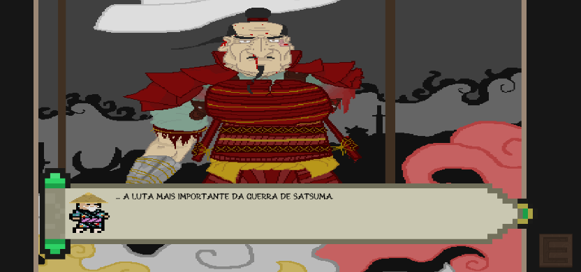

TCC Jogos Digitais (IFPR)
Autor:
William,Lucas,Giordano,Felipe
Data de criação:
2022
Estilo:
2D Plataforma
Genero:
Ação
Motivação
Este foi um dos primeiros projetos que trabalhei, este jogo foi o meu TCC do curso de Jogos Digitais da IFPR.
Historia
A historia e do ultimo samurai do japão, na vida real teve uma guerra civil para o fim dos samurais, a historia se passa depois dessa guerra civil, com o ultimo samurai e seu avo, o avo e capturado pelo imperador por ser o ultimo samurai e seu neto vai atras deles, e nisso ele passa por varios obstaculos ate chegar a seu avo e libera-lo de seu capturador.
Ambientes
O jogo se passa no japão por volta de 1600's, e durante o jogo você passara por varios fases, cade um com uma ambiente diferente do outro, entre todos temos: Uma floresta de bambu, montanhas com um trem na frente, uma caverna e outros
Gameplay
Você joga como satsuma, você movimentar o player para direita,esquerda e pulando alem de poder atacar usando seu mouse, você tambem pode agaichar para desviar ou atacar inimigos,e caso esteja escondido e ataque algum inimigo, o mata sem mais problemas
Engine/Linguagem usadas
Para este projeto foi principalmente utilizado a Unity3D, como comum desta desta Engine, a linguagem que mais utilizamos foi o C#
Link
Ainda não a link deste projeto pois ainda se encontra no final de seu desenvolvimento